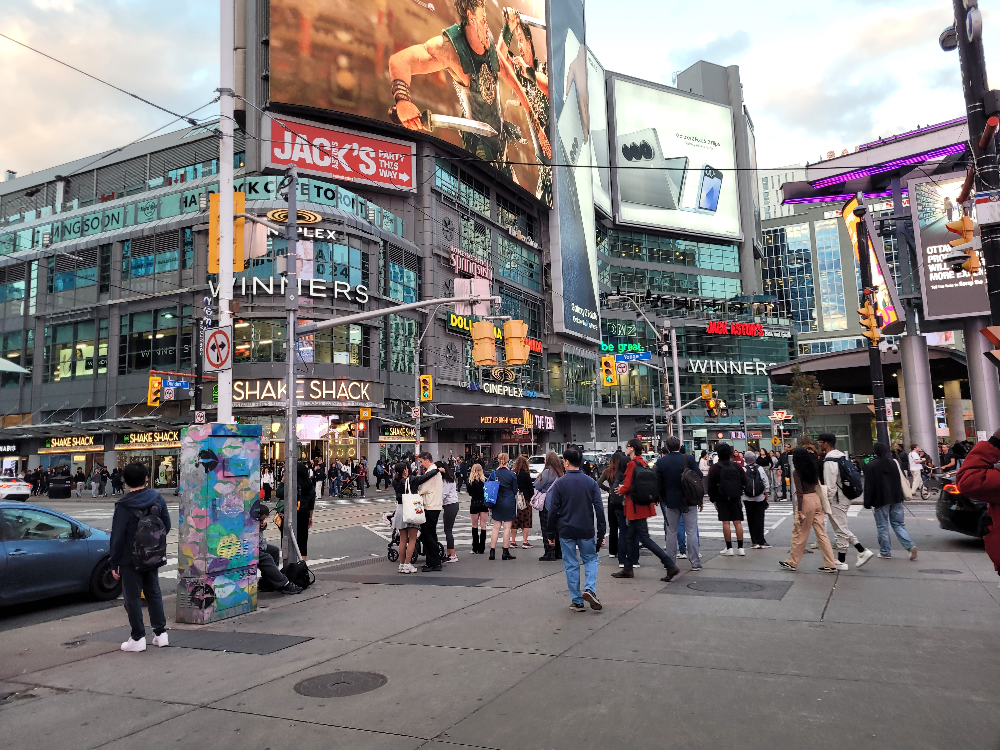
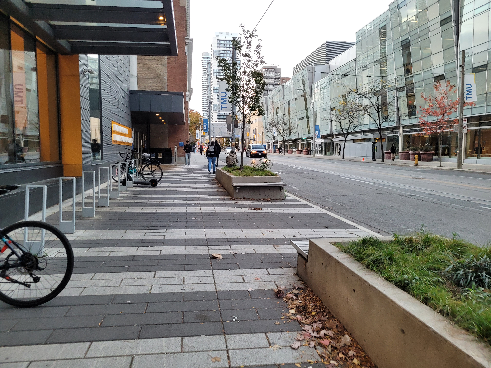

<!DOCTYPE html>
<html lang="en"></html> <!-- The Portfolio website content is in english  -->
<html>
<head>
    <meta charset="UTF-8">  <!-- To access symbols, emojis and other characters. -->
    <meta name ="description" content="Joshua Chung's portfolio website, work experience, education, and extracurricular activities">
    <meta name ="keywords" content="Portfolio website, school, assignment, lab, LinkedIn">
    <meta name ="author" content="Joshua Chung">
    <meta name ="viewport" content="width=device-width, initial-scale=1.0">

<title>Joshua Chung's Portfolio Website</title>
    <script src="ITM780_P3FinalProjectJoshuaChung.js"></script>
    <link rel="stylesheet" href="ITM780_P3FinalProjectJoshuaChung.css">
    <link rel="stylesheet" href="https://cdnjs.cloudflare.com/ajax/libs/font-awesome/4.7.0/css/font-awesome.min.css">
</head>
<body>

<div class = "logo">
    <h3><a href ="ITM780_P3FinalProjectJoshuaChung.html">Joshua Chung's Portfolio</a></h3>
</div>
<nav class ="navmenu">
    <ul>
        <li><a href ="ITM780_P3FinalProjectJoshuaChung.html">Home</a></li>
        <li><a href ="About.html">About Me</a></li>
        <li><a href ="School.html">My School</a></li>
        <li><a href ="Contact.html">Contact</a></li>
    </ul>
</nav>

<!-- Created buttons that will make the text large, normal size, and changed the background colour. -->
<br>

<button class = "homebutton" onclick="largeText()">Large Text Size</button>
<button class = "homebutton" button onclick="colourFunction()">Color Filter</button>

<h4>Overview:</h4>
<p>Hi, my name is Joshua! I am currently a student at <a href="https://www.torontomu.ca/" target="_blank">Toronto Metropolitan University (TMU)</a>, majoring in <a href="https://www.torontomu.ca/programs/undergraduate/business-technology-management/" target="_blank">Business Technology Management</a>.</p>

<p>In the Business Technology Management Program, Students study many aspects of business such as marketing, accounting, finance, and information technology.
    So far, I learned how to analyze businesses needs to leverage and create effective technological solutions. 
    Students use these skills to improve business processes and create opportunities.</p>

<p>The course I found most useful was Introduction to Professional Communication (CMN279).
    In this course, I learned how to communicate more effectively with others through case studies and simulations. This was especially helpful during my Co-op roles at XYZ Storage and Softchoice as I communicated with my teams on a daily basis. 
    This has allowed me to complete my work projects on time and effectively coordinate staff events.</p>

<!-- Putting three Images I took of TMU's campus in the education section of the website. -->
<div class="row">
    <div class="column">
        
        <div class = "altstyle">
            <p>Ted Rogers School of Management, Toronto, Ontario, Canada - November 6, 2024</p>
            <input type="button" class = "homebutton" onclick="alert('Photo outside of the Ted Rogers School Of Management building on a afternoon day as I am leaving my ITM780 class and going home.')" value="Display Alt-Text"> <!-- Alt text button that alerts user with the description of the image when clicked-->
        </div>
    </div>
    <div class="column">
        
        <div class = "altstyle">
            <p>Yonge-Dundas Square, Toronto, Ontario, Canada - November 6, 2024</p>
            <input type="button" class = "homebutton" onclick="alert('Photo of downtown Toronto during the afternoon, bustling with people, cars, stores, and advertisements')" value="Display Alt-Text"> <!-- Alt text button that alerts user with the description of the image when clicked-->
        </div>
    </div>
    <div class="column">
        
        <div class = "altstyle">
            <p>Daphne Coxwell Complex (To the Left) & George Vari Engineering & Computing Centre (To the Right), Toronto, Ontario, Canada - November 6, 2024</p>
            <input type="button" class = "homebutton" onclick="alert('Photo outside of the Daphne Coxwell Complex & George Vari Engineering & Computing Centre as I am walking on the sidewalk and going home.')" value="Display Alt-Text"> <!-- Alt text button that alerts user with the description of the image when clicked-->
        </div>
    </div>
</div>

<iframe src="https://www.youtube.com/embed/6PXxeHjT1xo"></iframe>

<div class="pcenter">
<p>trssociety. (2018, August 22). <i>A Tour of the Ted Rogers School of Management - TRSM</i> [Video]. YouTube. https://www.youtube.com/watch?v=6PXxeHjT1xo</p>
</div>

<link rel="stylesheet" href="https://cdnjs.cloudflare.com/ajax/libs/font-awesome/4.7.0/css/font-awesome.min.css">
<link rel="stylesheet" href=https://kit.fontawesome.com/88f05daeb4.js>
<p><a href="https://www.instagram.com/torontomet/?hl=en" target="_blank"> <i class="fa fa-instagram" style="font-size:30px;color:#e1306c"></i>
</a> <a rel="noopener" href="https://www.instagram.com/torontomet/?hl=en" target="_blank">TMU's Instagram</a></p>

<hr>

<small>Copyright © 2024 Joshua Chung. All Rights Reserved.</small>
</body>
</html>